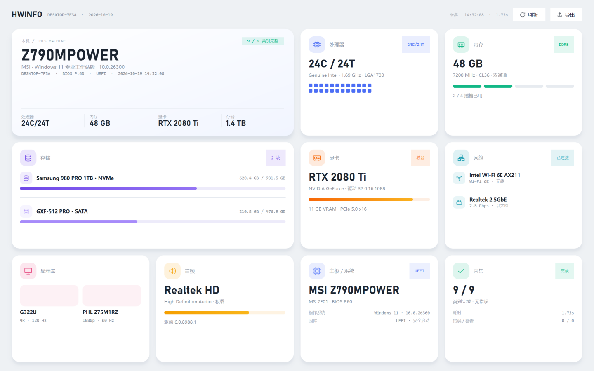
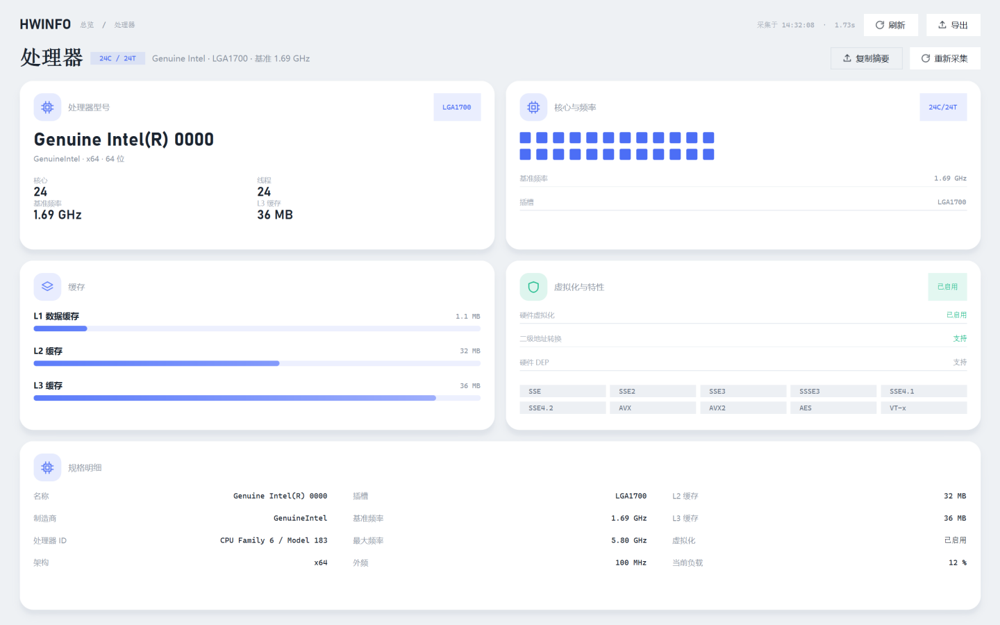
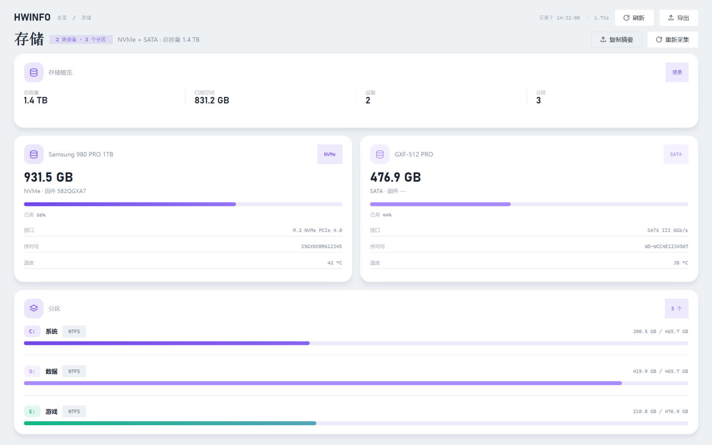
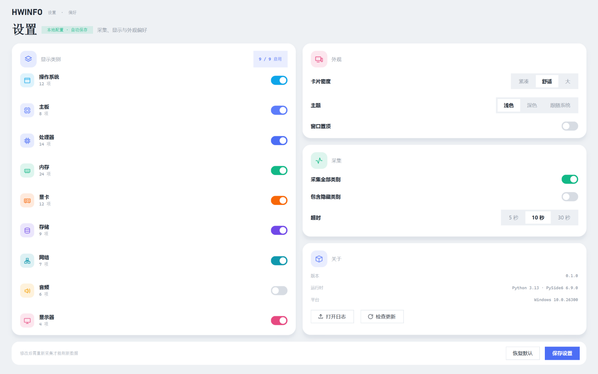
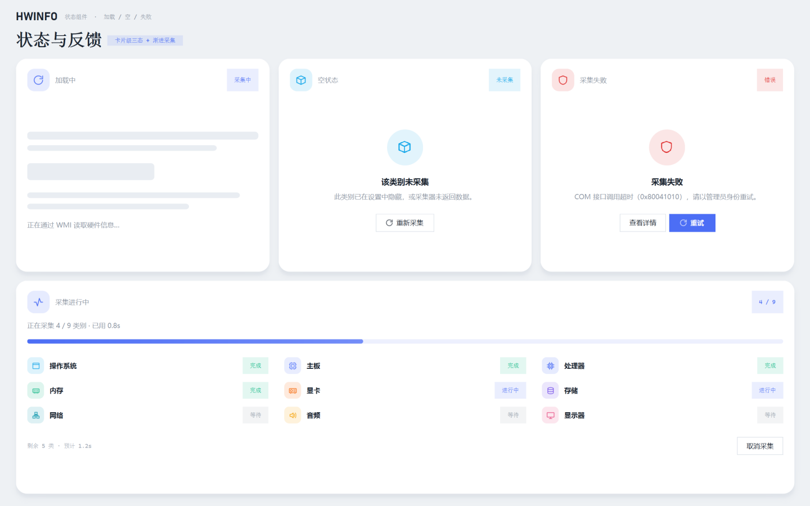

风格定为 03 便当格 后，先补全关键页面：总览、类别详情（标量型 / 列表型）、设置、加载 / 空 / 失败与渐进采集。 全部 1440×900，共用同一套圆角、阴影与配色；仍然只用 Windows 自带字体。
本机大卡 + 8 张类别卡，一屏看完

标量型类别：型号 / 核心 / 缓存 / 特性 / 明细

列表型类别：设备卡 + 分区条

9 个类别开关 + 外观 / 采集 / 关于 + 底部保存条

卡片级加载 / 空 / 失败 + 采集进度与类别状态

| 页面 | 承载内容 | 复用组件 | 接入采集层时的要点 |
|---|---|---|---|
| 总览 | 本机身份、CPU / 内存 / 显卡 / 存储 / 网络 / 显示器 / 音频 / 主板 | 卡片、图标块、迷你指标、内存插槽、核心格、进度条 | 每完成一类就填充对应卡片，先占位骨架再替换 |
| 类别详情 | 标量型（处理器）与列表型（存储）两套模板，其余 7 类套用 | 卡片、定义列表、缓存条、分区条、开关标签 | 列表型按设备循环生成卡片；分区来自 collectors/storage |
| 设置 | 类别显示开关、密度、主题、置顶、超时、关于 | 自定义开关、分组分段控件、底部操作条 | 修掉「禁用全部类别却采集全部」的过滤逻辑 |
| 状态 | 加载骨架、空态、失败态、采集进行中（4 / 9） | 骨架条、圆形状态徽标、状态标签、进度条 | 需要 CollectorManager 提供逐类回调 |
gui/：先落 tokens 与组件库，
再接 AppState 与渐进式采集回调，最后把「总览 / 详情 / 设置」接上真实数据。
实时监控按之前约定继续后置，但圆环与进度条组件已经预留。